Chủ đề 7: Xây dựng năng lực và sự phát triển của đội ngũ
Topic 7: Building Team Capability & Growth — bản đối chiếu Anh – Việt
TS. Thao Luong · 43 slide
Quy ước của bản dịch. Mỗi slide là một khối: cột bên trái là nguyên văn tiếng Anh (màu xám), cột bên phải là bản tiếng Việt (màu đen). Nội dung được dịch sát theo từng slide, không lược bỏ. Chữ nằm trong hình đồ hoạ của slide cũng được dịch. Khẩu hiệu “Ready for what’s next” của RMIT xuất hiện ở hầu hết các slide nên không nhắc lại.
Đây là một buổi workshop thực hành với LEGO® Serious Play®. Các slide hoạt động thường đi kèm đồng hồ đếm ngược và mã QR dẫn tới Padlet; những phần này được ghi bằng chữ nghiêng màu xám. Phần mô tả đó là ghi chú của bản dịch, không phải nội dung gốc trên slide.
Tên riêng, tên tổ chức, tên thương hiệu LEGO® Serious Play® và địa chỉ liên hệ giữ nguyên. Identity được dịch là “bản sắc”: Core Identity (CI) là “bản sắc cốt lõi”, External Identity (EI) là “bản sắc bên ngoài”, Possible Identity (PI) là “bản sắc tiềm năng”, Real Time Identity (RTI) là “bản sắc thời gian thực”. Team Life là “đời sống đội ngũ”, Team Landscape là “bức tranh toàn cảnh đội ngũ”. Các chữ viết tắt CI, EI, PI, RTI được giữ nguyên như trên slide.
Topic 7: Building Team Capability & Growth
Chủ đề 7: Xây dựng năng lực và sự phát triển của đội ngũ
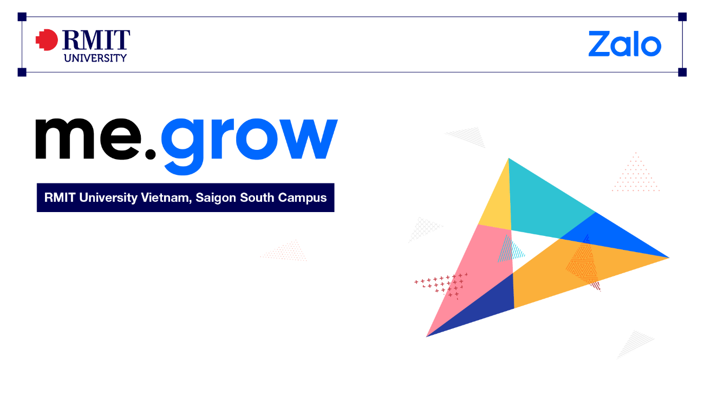
About this session
Về buổi học này
Today is an opportunity to step away from doing the work and explore how we show up, work together, and contribute to the team as a whole.
Using LEGO® Serious Play®, we will make our thinking visible, hear every voice, and build a shared picture of the team.
By the end of this session, you will:
- Explore your strengths, values, working style and unique contribution;
- Appreciate what others bring and the spirit that makes the team unique;
- Recognize how individual roles, relationships, and influences shape the way we work;
- Reflect on your Real-Time Identity – who you need to be to contribute at your best.
Hôm nay là dịp để tạm rời công việc thường ngày và khám phá cách chúng ta thể hiện bản thân, làm việc cùng nhau và đóng góp cho đội ngũ như một tổng thể.
Với LEGO® Serious Play®, chúng ta sẽ làm cho suy nghĩ của mình hiện ra trước mắt, lắng nghe tiếng nói của mọi người và cùng dựng nên một bức tranh chung về đội ngũ.
Kết thúc buổi học, bạn sẽ:
- Khám phá điểm mạnh, giá trị, phong cách làm việc và đóng góp riêng của mình;
- Trân trọng những gì người khác mang lại và tinh thần làm nên nét riêng của đội ngũ;
- Nhận ra vai trò cá nhân, các mối quan hệ và những ảnh hưởng định hình cách chúng ta làm việc;
- Suy ngẫm về Bản sắc thời gian thực (Real-Time Identity) của bạn – con người bạn cần trở thành để đóng góp ở mức tốt nhất.
Bên cạnh là ảnh những tháp gạch LEGO nhiều màu và huy hiệu chứng nhận điều phối viên LEGO® Serious Play®.
Agenda
Chương trình
- Your Identity on the Team
- Team Life (or the Spirit of the Team)
- The Team Landscape (or “How is the Team connected?”)
- (Homework) Real Time Identity for YOU
- Bản sắc của bạn trong đội ngũ
- Đời sống đội ngũ (hay Tinh thần đội ngũ)
- Bức tranh toàn cảnh đội ngũ (hay “Đội ngũ kết nối với nhau như thế nào?”)
- (Bài tập về nhà) Bản sắc thời gian thực của BẠN
About me
Về tôi
Senior Program Manager – Lecturer (Human Resource Management)
E-mail: thao.luong3@rmit.edu.vn
Education:
- Ph.D. in Knowledge Science, Japan Advanced Institute of Science and Technology (Japan)
- Master in HRM, Griffith University (Australia)
- Bachelor in Business, University of Economics HCMC (Vietnam)
- CHT & CHE (American Hotel and Lodging Educational Institute)
- Trained Facilitator in the LEGO® Serious Play® Methodology
Work Experience (15 years): Sales (PepsiCo International), HR (FrieslandCampina), Corporate Training (Saigontourist Group), VP (Saigontourist Hospitality College)
Quản lý Chương trình cấp cao – Giảng viên (Quản trị Nguồn nhân lực)
E-mail: thao.luong3@rmit.edu.vn
Học vấn:
- Tiến sĩ Khoa học Tri thức, Viện Khoa học và Công nghệ Tiên tiến Nhật Bản (Nhật Bản)
- Thạc sĩ Quản trị Nguồn nhân lực, Đại học Griffith (Úc)
- Cử nhân Kinh doanh, Đại học Kinh tế TP.HCM (Việt Nam)
- CHT & CHE (Viện Giáo dục Khách sạn và Lưu trú Hoa Kỳ – American Hotel and Lodging Educational Institute)
- Điều phối viên được đào tạo về phương pháp LEGO® Serious Play®
Kinh nghiệm làm việc (15 năm): Bán hàng (PepsiCo International), Nhân sự (FrieslandCampina), Đào tạo doanh nghiệp (Saigontourist Group), Phó Hiệu trưởng (Saigontourist Hospitality College)
Our Playbook
Luật chơi của chúng ta
- Be fully present
- Try to earn the playground money for your team
- Honor others’ opinions
- Put cellphones away and on vibrate (if possible)
- Please don’t hurt anyone
- Use burning thoughts for questions
- Relax and have fun
- “Through discipline comes freedom” – Aristotle
- Hiện diện trọn vẹn
- Cố gắng kiếm “tiền sân chơi” về cho đội của bạn
- Tôn trọng ý kiến của người khác
- Cất điện thoại và để chế độ rung (nếu có thể)
- Xin đừng làm ai bị tổn thương
- Dùng những suy nghĩ còn trăn trở để đặt câu hỏi
- Thư giãn và vui vẻ
- “Tự do đến từ kỷ luật” – Aristotle
Slide minh hoạ bằng hình Aristotle, một xấp tiền đồ chơi (mệnh giá 1, 5, 10, 20, 50, 100) và chiếc ô RMIT.
LEGO® Serious Play® (LSP®) Methodology Origins
Nguồn gốc phương pháp LEGO® Serious Play® (LSP®)
- Born in the late 1990s in the context of strategy work and executive education
- Originators: Bart Victor and Johan Roos + Kjeld Kirk Kristiansen
- Ra đời vào cuối thập niên 1990, trong bối cảnh công tác chiến lược và đào tạo lãnh đạo cấp cao
- Những người khởi xướng: Bart Victor và Johan Roos + Kjeld Kirk Kristiansen
Roos, J, Victor, B & Statler, M 2004, ‘Playing seriously with strategy’, Long Range Planning, vol. 37, no. 6, pp. 549–568.
Roos, J & Victor, B 2018, ‘How It All Began: The Origins Of LEGO® Serious Play®’, International Journal of Management and Applied Research, vol. 5, no. 4, pp. 326–343.
Slide kèm một đồ hoạ dòng thời gian: “The History of LEGO® Serious Play® — From a toy to a powerful tool for people, teams and organisations” (Lịch sử của LEGO® Serious Play® — Từ một món đồ chơi thành công cụ mạnh mẽ cho con người, đội ngũ và tổ chức). Mẩu giấy ghi chú ở góc: “Same bricks. A bigger purpose.” (Vẫn những viên gạch ấy. Một mục đích lớn hơn.) Nội dung dòng thời gian được dịch theo cấu trúc hình ở khung dưới.
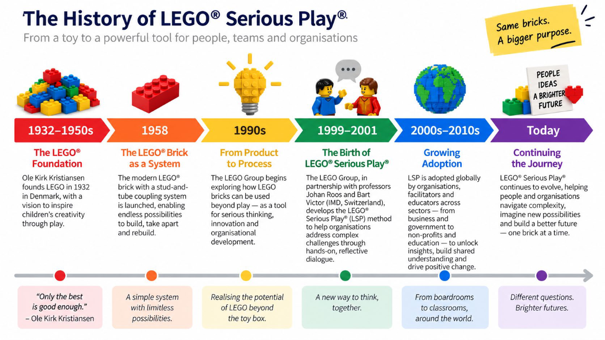
LEGO® Serious Play® (LSP®) Methodology Origins
Nguồn gốc phương pháp LEGO® Serious Play® (LSP®)
- However, humans have emotion and are social creatures – important in strategy making;
- Their strategy is to acknowledge all of these elements (cognitive, emotional and social aspects) that make us humans done through “Serious Play”
Work Mode — Typical Strategy Process: Cognitive · Deliberate · Verbal · Written · 2D Graphic (Graphs, .ppt, .xls)
Play Mode — Experimental Strategy Process: 3D Tactile Media
- Tuy nhiên, con người có cảm xúc và là sinh vật xã hội – điều quan trọng trong hoạch định chiến lược;
- Cách tiếp cận của họ là ghi nhận toàn bộ các yếu tố làm nên con người (nhận thức, cảm xúc và xã hội), thông qua “Chơi nghiêm túc” (Serious Play)
Chế độ làm việc — Quy trình chiến lược thông thường: Lý trí · Có chủ đích · Lời nói · Văn bản · Đồ hoạ 2D (biểu đồ, .ppt, .xls)
Chế độ chơi — Quy trình chiến lược thử nghiệm: Phương tiện xúc giác 3D
Roos, J, Victor, B & Statler, M 2004, ‘Playing seriously with strategy’, Long Range Planning, vol. 37, no. 6, pp. 549–568.
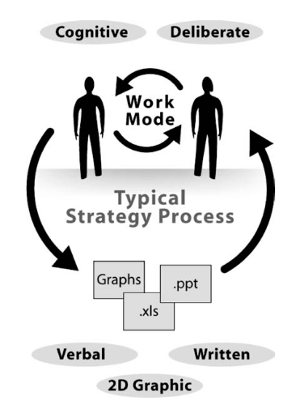
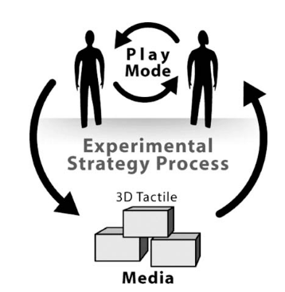
LSP® is indeed grounded in a variety of theories
LSP® thực chất dựa trên nhiều lý thuyết
- Organizational Identity (Albert & Whetten; Clegg)
- Heedful Interaction (Weick)
- Imagination (Kearney)
- Constructivism (Piaget)
- Complex Adaptive Systems theory (Kaufmann)
- Fitness Landscape (Kaufmann)
- Organizational Epistemology (von Krogh & Roos)
- Constructionism (Papert)
- Coherance (Lissack & Roos)
- The Hand (Wilson)
- Bricolage (Levi-Strauss)
- Active Imagination (Jung)
- Autopoiesis in social systems (Luhmann)
- Autopoiesis in natural systems (Maturana & Varela)
- Bản sắc tổ chức (Albert & Whetten; Clegg)
- Tương tác có chủ tâm (Weick)
- Trí tưởng tượng (Kearney)
- Thuyết kiến tạo (Piaget)
- Lý thuyết hệ thích nghi phức hợp (Kaufmann)
- Địa hình thích nghi (Kaufmann)
- Nhận thức luận tổ chức (von Krogh & Roos)
- Thuyết kiến tạo qua thực hành – constructionism (Papert)
- Tính mạch lạc (Lissack & Roos)
- Bàn tay (Wilson)
- Bricolage – chắp ghép từ những gì sẵn có (Levi-Strauss)
- Tưởng tượng chủ động (Jung)
- Tự tạo sinh trong hệ thống xã hội (Luhmann)
- Tự tạo sinh trong hệ thống tự nhiên (Maturana & Varela)
Meet Our RMIT University LSP® Facilitators
Gặp gỡ các điều phối viên LSP® của Đại học RMIT
- A/Prof. Elaine Chew — Associate Head of Department (Management Dept.) — elaine.chew@rmit.edu.vn
- Dr. Trang Le — Lecturer (Entrepreneurship) — trang.le43@rmit.edu.vn
- Dr. Thao Luong — Senior Program Manager, Lecturer (HRM) — thao.luong3@rmit.edu.vn
- Mr. Vincent Quach — Lecturer, Tourism and Hospitality Management — ha.quachvan@rmit.edu.vn
- PGS. Elaine Chew — Phó Trưởng khoa (Khoa Quản trị) — elaine.chew@rmit.edu.vn
- TS. Trang Le — Giảng viên (Khởi nghiệp) — trang.le43@rmit.edu.vn
- TS. Thao Luong — Quản lý Chương trình cấp cao, Giảng viên (Quản trị Nguồn nhân lực) — thao.luong3@rmit.edu.vn
- Ông Vincent Quach — Giảng viên, Quản trị Du lịch và Khách sạn — ha.quachvan@rmit.edu.vn
Slide kèm ảnh chân dung của bốn điều phối viên và huy hiệu chứng nhận LEGO® Serious Play®.
Ground Rules
Nguyên tắc chung
- Build as you want – there is no right and wrong!
- Only you decide the meaning of your model!
- You own your model and the story about it!
- If you get stuck, just build (hands on)!
- You are all committed to building and have the right to explain!
- Be curious – listen with your eyes & ask questions about other participants’ models!
- Give you mobile and computer a break!
- Lắp theo ý bạn – không có đúng hay sai!
- Chỉ bạn mới quyết định ý nghĩa của mô hình mình!
- Mô hình và câu chuyện về nó thuộc về bạn!
- Nếu bí, cứ lắp (bắt tay vào làm)!
- Tất cả đều cam kết lắp ghép và đều có quyền giải thích!
- Hãy tò mò – lắng nghe bằng mắt và đặt câu hỏi về mô hình của những người khác!
- Cho điện thoại và máy tính của bạn nghỉ ngơi!
4 NO GO’s
4 ĐIỀU KHÔNG ĐƯỢC LÀM
- Do not evaluate (I like – dislike…)
- Do not assess (I find, I think…)
- Do not interpret (To me,…)
- Do not go beyond the model (How did you feel when…)
- Không đánh giá (tôi thích – không thích…)
- Không nhận định (tôi thấy, tôi nghĩ…)
- Không diễn giải (Với tôi thì…)
- Không đi ra ngoài mô hình (Bạn cảm thấy thế nào khi…)
LSP® Skill Building – Metaphors
Rèn kỹ năng LSP® – Ẩn dụ
- Metaphor is an expression that describes a person or object by referring to something that is considered to have similar characteristics to that person or object (e.g., “the mind is an ocean”)
- Metaphors help us to:
- communicate complex ideas
- make sense of something that is otherwise hard to put in words
- think about reality in different ways
- explore possibilities we may be afraid to explore in real life
- Ẩn dụ là cách diễn đạt mô tả một người hay một vật bằng cách nhắc tới một thứ khác được xem là có đặc điểm tương đồng với người hay vật đó (ví dụ: “tâm trí là một đại dương”)
- Ẩn dụ giúp chúng ta:
- truyền đạt những ý tưởng phức tạp
- hiểu được những điều vốn khó diễn đạt thành lời
- nhìn thực tại theo những cách khác nhau
- khám phá những khả năng mà ngoài đời thực ta có thể e ngại
Hình minh hoạ: một nhân vật LEGO cưỡi trên lưng con cá mập bằng gạch.
Let us pass this point!
Hãy vượt qua điểm này!
- Even when you can not plan it, you can build it.
- When you do something with your hands, a complex process takes over that expands the experience.
- Trust your hands, let them choose the bricks they want.
- Do not get stuck in the design.
- Ngay cả khi không lên kế hoạch được, bạn vẫn lắp được.
- Khi bạn làm gì đó bằng tay, một quá trình phức tạp sẽ tiếp quản và mở rộng trải nghiệm.
- Hãy tin đôi tay, để chúng tự chọn những viên gạch chúng muốn.
- Đừng sa lầy vào khâu thiết kế.
Hình minh hoạ: một nhân vật LEGO bực bội đập đầu vào tường trong văn phòng.
Slide nhắc lại chương trình bốn phần như slide 03, trước khi vào phần chính.
LEGO® Serious Play® (LSP®) – Real Time Identity
LEGO® Serious Play® (LSP®) – Bản sắc thời gian thực
Real Team: Realize the team’s full potential – quickly and effectively.
Đội ngũ Thực thụ: phát huy trọn vẹn tiềm năng của đội ngũ – nhanh chóng và hiệu quả.
| From Từ | To Đến |
| From acting randomly Từ hành động ngẫu nhiên | To acting deliberately Đến hành động có chủ đích |
| From being distinct job functions Từ những chức năng công việc tách biệt | To being effectively integrated Đến sự gắn kết hiệu quả |
| From having to live with frustrations Từ việc phải chịu đựng những bức bối | To changing things for the better Đến việc thay đổi mọi thứ tốt hơn |
| From individual identities Từ những bản sắc cá nhân | To having a shared identity Đến một bản sắc chung |
| From just looking at individual abilities Từ chỉ nhìn vào năng lực cá nhân | To recognizing the mutual benefits Đến việc nhận ra lợi ích chung |
Kèm ảnh bộ gạch LEGO® Serious Play® dùng trong buổi học.
GROUP OR TEAM?
NHÓM HAY ĐỘI NGŨ?
Năm cấp độ xếp tăng dần trên biểu đồ: trục đứng là “Complexity and Commonality of Goal” (Độ phức tạp và mức độ chung của mục tiêu), trục ngang là “Degree of Interdependence and Collaboration” (Mức độ phụ thuộc lẫn nhau và cộng tác).
Source / Nguồn: Kanaga, K., & Kossler, M. E. (2001). How to form a team: five keys to high performance. Centre for Creative Leadership.
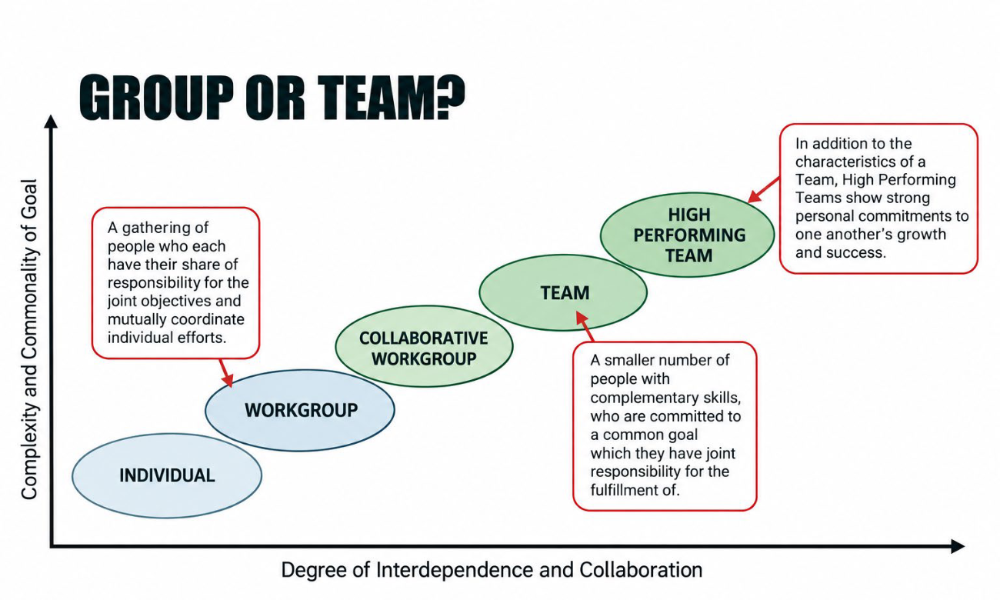
The Johari Window: A help to introduce the first section
Cửa sổ Johari: công cụ dẫn nhập cho phần thứ nhất
Hai mũi tên trên sơ đồ: “Self-disclosure” (Tự bộc lộ) mở rộng ô Mở theo chiều dọc, “Feedback” (Phản hồi) mở rộng theo chiều ngang. Bên cạnh là một nhân vật LEGO đeo ba lô cầm tấm bản đồ.
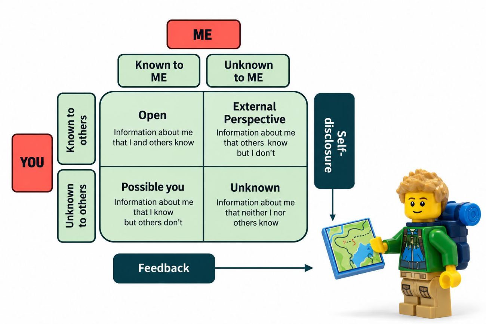
1. Your Identity on the Team
1. Bản sắc của bạn trong đội ngũ
This section invites participants to reflect on how they show up in their current team, what they currently contribute, and what more they could bring to strengthen collaboration. Through LEGO® Serious Play®, participants explore their current and possible role in supporting stronger alignment, teamwork, and performance at Zalo.
Phần này mời người tham gia suy ngẫm về cách họ thể hiện mình trong đội ngũ hiện tại, những gì họ đang đóng góp và những gì họ có thể mang lại thêm để tăng cường sự cộng tác. Thông qua LEGO® Serious Play®, người tham gia khám phá vai trò hiện tại và vai trò tiềm năng của mình trong việc hỗ trợ sự thống nhất, tinh thần làm việc nhóm và hiệu suất tốt hơn tại Zalo.
1. Your Identity on the Team — THE IDEA
1. Bản sắc của bạn trong đội ngũ — Ý TƯỞNG
- A Core Identity (CI): The qualities, values, and strengths that define how you naturally contribute when working in your team
- An External Identity (EI): How others see and experience you in your team
- A Possible Identity (PI): The additional value, behaviors, or strengths you could bring to support stronger collaboration and alignment, but have not yet fully shown
- Bản sắc cốt lõi (Core Identity – CI): những phẩm chất, giá trị và điểm mạnh quyết định cách bạn đóng góp một cách tự nhiên khi làm việc trong đội ngũ
- Bản sắc bên ngoài (External Identity – EI): cách người khác nhìn nhận và trải nghiệm việc làm cùng bạn trong đội ngũ
- Bản sắc tiềm năng (Possible Identity – PI): những giá trị, hành vi hay điểm mạnh bổ sung mà bạn có thể mang lại để tăng cường sự cộng tác và thống nhất, nhưng chưa thể hiện trọn vẹn
1. You as a Team Member
1. Bạn với tư cách thành viên đội ngũ
- Individually, use a plate to build two models:
- On 2/3 of the plate, build a model of your Core Identity (CI) on the team: who are you in this team and what could you bring to the team?
- On the remaining third, build a model of your Possible Identity (PI) on the team: what could you bring to the team?
CI – Who am I in this team?
PI – What could I bring to the team?
We are working with your professional identity: your competencies, experience, personality
- Mỗi người dùng một tấm đế để lắp hai mô hình:
- Trên 2/3 tấm đế, lắp mô hình Bản sắc cốt lõi (CI) của bạn trong đội ngũ: bạn là ai trong đội ngũ này và bạn có thể mang lại gì cho đội ngũ?
- Trên 1/3 còn lại, lắp mô hình Bản sắc tiềm năng (PI) của bạn trong đội ngũ: bạn có thể mang lại gì cho đội ngũ?
CI – Tôi là ai trong đội ngũ này?
PI – Tôi có thể mang lại gì cho đội ngũ?
Chúng ta đang làm việc với bản sắc nghề nghiệp của bạn: năng lực, kinh nghiệm, tính cách
- Take a photo of your model, upload to the Padlet
- Share with your group (2 mins/person for sharing)
- Chụp ảnh mô hình của bạn và tải lên Padlet
- Chia sẻ với nhóm (mỗi người 2 phút)
Slide 22 là đồng hồ đếm ngược 10:00. Slide 23 nhắc lại nội dung hoạt động, thêm hai dòng về chụp ảnh và chia sẻ (hàng cuối ở trên), kèm mã QR dẫn tới Padlet.
“Who is your external I, on the team?”
“Cái tôi bên ngoài của bạn trong đội ngũ là ai?”
You are of course the only one, who can alter your core identity and desired identity.
Challenge A: How do you see others?
The facilitator will give you the name of another team member. Then build a small model on behalf of that member. The model must represent a side of the person’s external identity of which you see.
Challenge B: Story about what others see.
Tell the story and then give the model to the other team member – do not tell who the model represents, before the story is told. Collect all the identities subsequently.
Examples: Complicated and mysterious · Available but not to get hold on · Knows exactly what is happening around you · The influence is extensive · Always ready to rescue others · Keen and transparent
Dĩ nhiên, chỉ mình bạn mới có thể thay đổi bản sắc cốt lõi và bản sắc mong muốn của mình.
Thử thách A: Bạn nhìn người khác thế nào?
Điều phối viên sẽ cho bạn tên của một thành viên khác. Hãy lắp một mô hình nhỏ thay cho người đó. Mô hình phải thể hiện một khía cạnh trong bản sắc bên ngoài của người ấy mà bạn nhìn thấy.
Thử thách B: Câu chuyện về những gì người khác thấy.
Hãy kể câu chuyện rồi trao mô hình cho thành viên đó – đừng nói mô hình đại diện cho ai trước khi kể xong. Sau đó tập hợp tất cả các bản sắc lại.
Ví dụ: Phức tạp và bí ẩn · Luôn có mặt nhưng khó nắm bắt · Biết rõ mọi chuyện đang diễn ra quanh bạn · Tầm ảnh hưởng rộng · Luôn sẵn sàng cứu người khác · Nhiệt tình và minh bạch
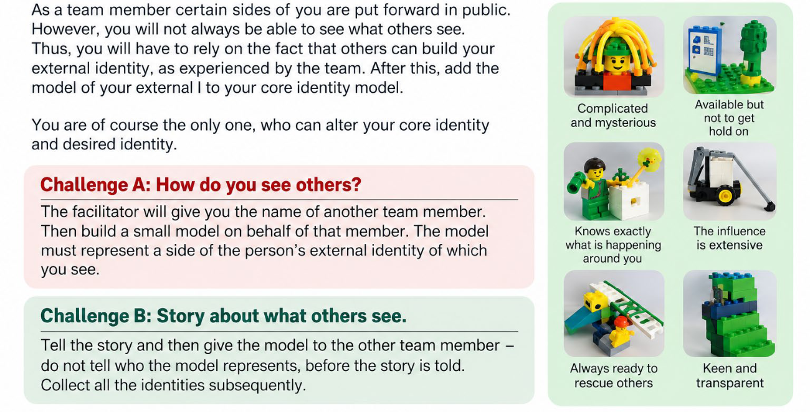
“Who is your external I, on the team?”
“Cái tôi bên ngoài của bạn trong đội ngũ là ai?”
- The facilitator will assign you another participant (please do not reveal the name at first).
- Use a plate to build a model that represents how this person is experienced on the team.
- On ¾ of the plate, build 2 prominent features of how this person works (e.g. communication style, responsiveness, openness, reliability, coordination, problem-solving)
- On ¼ of the plate, build 1 recommendation that could help this person strengthen collaboration across departments
- Share the story of your model and let others guess who it represents
- Then give the model to that person as feedback for reflection.
EI – How do colleagues experience working with me?
- Điều phối viên sẽ phân cho bạn một người tham gia khác (xin đừng tiết lộ tên lúc đầu).
- Dùng một tấm đế để lắp mô hình thể hiện cách đội ngũ trải nghiệm việc làm cùng người này.
- Trên ¾ tấm đế, lắp 2 đặc điểm nổi bật trong cách người này làm việc (ví dụ: phong cách giao tiếp, mức độ phản hồi, sự cởi mở, độ tin cậy, khả năng phối hợp, cách giải quyết vấn đề)
- Trên ¼ tấm đế, lắp 1 đề xuất có thể giúp người này tăng cường cộng tác giữa các phòng ban
- Kể câu chuyện về mô hình của bạn và để mọi người đoán đó là ai
- Sau đó trao mô hình cho người ấy như một lời phản hồi để họ suy ngẫm.
EI – Đồng nghiệp trải nghiệm việc làm cùng tôi như thế nào?
- We are focusing on the person’s professional role and team behavior
- Focus on observable behaviors, not assumptions or personal judgments
- When giving a recommendation, focus on what could strengthen collaboration, coordination, and trust
- Build from a current, real-work perspective
- Be honest, respectful, and constructive
- The purpose is to support reflection and stronger cross-functional leadership, not criticism.
- Chúng ta tập trung vào vai trò nghề nghiệp và hành vi trong đội ngũ của người đó
- Tập trung vào hành vi quan sát được, không phải giả định hay phán xét cá nhân
- Khi đưa ra đề xuất, hãy tập trung vào điều có thể tăng cường cộng tác, phối hợp và niềm tin
- Lắp từ góc nhìn công việc thực tế hiện tại
- Trung thực, tôn trọng và mang tính xây dựng
- Mục đích là hỗ trợ sự suy ngẫm và năng lực lãnh đạo liên chức năng vững hơn, không phải để phê bình.
- Take a photo of your model, upload to the Padlet
- Share with your group (2 mins/person for sharing)
- Chụp ảnh mô hình của bạn và tải lên Padlet
- Chia sẻ với nhóm (mỗi người 2 phút)
Slide 25 hướng dẫn hoạt động (kèm hình một nhân vật LEGO và tấm đế), slide 26 là phần “Hãy nhớ”, slide 27 là đồng hồ đếm ngược 10:00, slide 28 nhắc lại hướng dẫn cùng hai dòng về chụp ảnh và chia sẻ, kèm mã QR dẫn tới Padlet.
2. Team Life (or Spirit of the Team)
2. Đời sống đội ngũ (hay Tinh thần đội ngũ)
“Team Life” seems to have its own life. All team members are affected by it, and they themselves affect it in different dimensions. Team Life is larger and more persistent than any single individual – regardless of the particular case being good or bad.
Everyone experiences the impact of Team Life in their own way, but there can be no doubt, that your Team Life has an impact on each of the identities included in the team, and thereby make it up.
The challenge: What and how is the team actually?
Build the 2 aspects of your Team Life as you think best characterizes the team’s practice and has the strongest impact on the way the team works and operates.
Positive or negative – if it characterizes your Team Life, then build it!
Examples: Independent contributions and initiatives are encouraged · Introverted and self-sufficient – but it goes fast.
“Đời sống đội ngũ” dường như có sự sống riêng. Mọi thành viên đều chịu ảnh hưởng của nó, và chính họ cũng tác động lên nó ở nhiều khía cạnh khác nhau. Đời sống đội ngũ lớn hơn và bền lâu hơn bất kỳ cá nhân nào – dù trong từng trường hợp cụ thể nó tốt hay xấu.
Mỗi người cảm nhận tác động của Đời sống đội ngũ theo cách riêng, nhưng chắc chắn rằng Đời sống đội ngũ tác động lên từng bản sắc trong đội ngũ, và qua đó tạo nên chính đội ngũ.
Thử thách: Thực chất đội ngũ là gì và như thế nào?
Hãy lắp 2 khía cạnh của Đời sống đội ngũ mà bạn cho là tiêu biểu nhất cho cách đội ngũ vận hành và tác động mạnh nhất đến cách đội ngũ làm việc.
Tích cực hay tiêu cực – nếu nó đặc trưng cho Đời sống đội ngũ của bạn, hãy lắp nó!
Ví dụ: Đóng góp và sáng kiến độc lập được khuyến khích · Hướng nội và tự lực – nhưng làm rất nhanh.
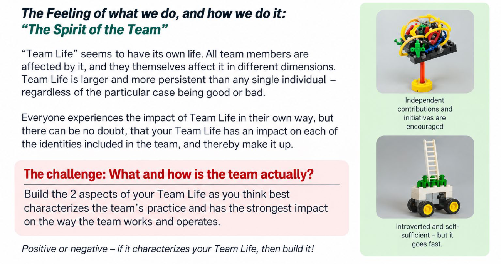
2. Team Life (or Spirit of the Team)
2. Đời sống đội ngũ (hay Tinh thần đội ngũ)
- Build the two aspects of your Team Life as you think best characterize the team’s practice.
- These can be positive or negative: if they strongly shape team’s collaboration, build them!
- Place all individual Team Life models in the middle of the table, so their positions also tell a story.
- Be ready to explain:
- what each aspect represents
- how it affects collaboration in the team
- whether it helps or hurts alignment and performance
- Lắp hai khía cạnh của Đời sống đội ngũ mà bạn cho là tiêu biểu nhất cho cách đội ngũ vận hành.
- Chúng có thể tích cực hoặc tiêu cực: nếu chúng định hình mạnh mẽ sự cộng tác của đội ngũ, hãy lắp chúng!
- Đặt tất cả mô hình Đời sống đội ngũ của từng người vào giữa bàn, để chính vị trí của chúng cũng kể một câu chuyện.
- Sẵn sàng giải thích:
- mỗi khía cạnh thể hiện điều gì
- nó ảnh hưởng thế nào đến sự cộng tác trong đội ngũ
- nó giúp ích hay gây hại cho sự thống nhất và hiệu suất
- Take a photo of your model, upload to the Padlet
- Share with your group (2 mins/person for sharing)
- Chụp ảnh mô hình của bạn và tải lên Padlet
- Chia sẻ với nhóm (mỗi người 2 phút)
Slide 30 kèm hình các nhân vật LEGO cùng lắp ghép. Slide 31 là đồng hồ đếm ngược 10:00. Slide 32 nhắc lại hướng dẫn cùng hai dòng về chụp ảnh và chia sẻ, kèm mã QR dẫn tới Padlet.
Enablers and Barriers to Team Life
Yếu tố thúc đẩy và rào cản đối với Đời sống đội ngũ
| Enablers Yếu tố thúc đẩy | Barriers Rào cản |
| Shared goals and priorities Mục tiêu và ưu tiên chung | Silo thinking and functional turf Tư duy cục bộ và tranh giành địa hạt giữa các bộ phận |
| Open communication across functions Giao tiếp cởi mở giữa các bộ phận | Conflicting KPI or priorities KPI hoặc ưu tiên mâu thuẫn nhau |
| Trust and mutual respect Niềm tin và sự tôn trọng lẫn nhau | Unclear ownership Không rõ ai làm chủ |
| Clear roles and decision rights Vai trò và quyền ra quyết định rõ ràng | Delayed communication or information gaps Giao tiếp chậm trễ hoặc thiếu hụt thông tin |
| Timely coordination and follow-through Phối hợp kịp thời và theo việc đến cùng | Lack of trust or psychological safety Thiếu niềm tin hoặc an toàn tâm lý |
| Leadership support and a collaboration mindset Sự hỗ trợ của lãnh đạo và tư duy cộng tác | Weak follow-through or inconsistent leadership signals Theo việc lỏng lẻo hoặc tín hiệu từ lãnh đạo thiếu nhất quán |
How can we strengthen cross-functional collaboration in practice
Làm thế nào để tăng cường cộng tác liên chức năng trong thực tế?
3. The Team Landscape — “How is the Team connected?”
3. Bức tranh toàn cảnh đội ngũ — “Đội ngũ kết nối với nhau như thế nào?”
Naturally, each connection is experienced very differently by the parties involved. Thus, there may be very different images and ideas of how the connections operate in practice. Therefore, be prepared to negotiate on the interpretation of a connection – or at least agree that variations do occur.
The Challenge – What is your part in all of this?
- Build, at the most, two important connections between yourself and a part of the Team Life model you feel most connected to.
- Build, at the most, two important connections between yourself and two other identity models on the table.
- Now tell the story of your Team Life and its connections!
You can make connections to your core identity or external identity!
Lẽ tự nhiên, mỗi kết nối được các bên liên quan trải nghiệm rất khác nhau. Vì thế, có thể tồn tại những hình dung và quan niệm rất khác nhau về cách các kết nối vận hành trong thực tế. Do đó, hãy sẵn sàng thương lượng về cách hiểu một kết nối – hoặc ít nhất đồng ý rằng sự khác biệt là có thật.
Thử thách – Phần của bạn trong tất cả những điều này là gì?
- Lắp tối đa hai kết nối quan trọng giữa bạn và một phần của mô hình Đời sống đội ngũ mà bạn thấy gắn bó nhất.
- Lắp tối đa hai kết nối quan trọng giữa bạn và hai mô hình bản sắc khác trên bàn.
- Giờ hãy kể câu chuyện về Đời sống đội ngũ của bạn và các kết nối của nó!
Bạn có thể tạo kết nối với bản sắc cốt lõi hoặc bản sắc bên ngoài của mình!
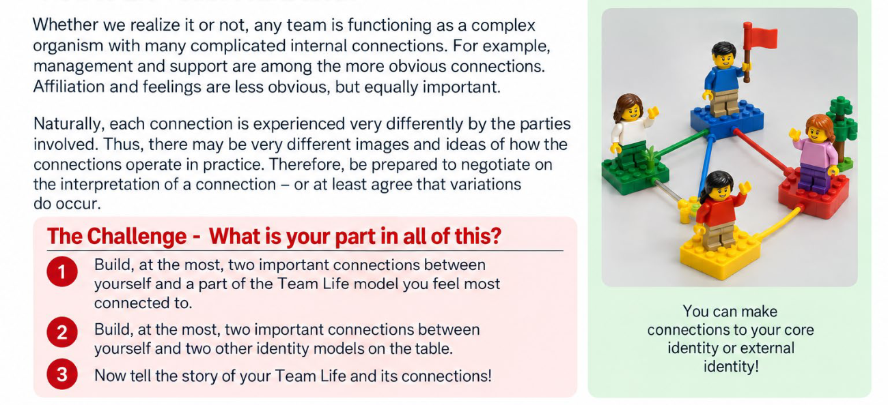
3. The Team Landscape — “How is the Team connected?”
3. Bức tranh toàn cảnh đội ngũ — “Đội ngũ kết nối với nhau như thế nào?”
- A connection is also a metaphor, representing the relationship between people.
- The purpose is to visualize the nature of collaboration by building connections between individual contribution and shared ways of working
- The exercise helps make visible:
- where collaboration is strong
- where dependencies are critical
- where disconnects, bottlenecks, or weak links may exist
- Một kết nối cũng là một ẩn dụ, thể hiện mối quan hệ giữa người với người.
- Mục đích là hình dung bản chất của sự cộng tác bằng cách lắp các kết nối giữa đóng góp của từng cá nhân và cách làm việc chung
- Bài tập giúp làm lộ ra:
- chỗ nào sự cộng tác mạnh
- chỗ nào sự phụ thuộc mang tính then chốt
- chỗ nào có thể đang đứt gãy, tắc nghẽn hoặc có mắt xích yếu
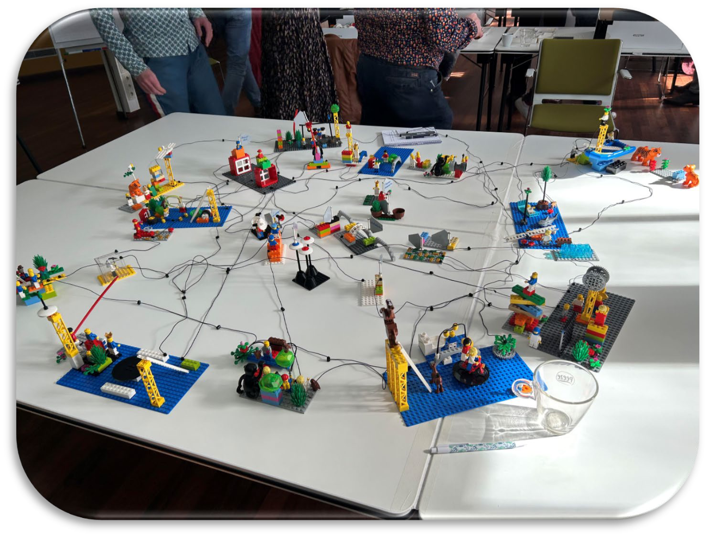
3. The Team Landscape — “How is the Team connected?”
3. Bức tranh toàn cảnh đội ngũ — “Đội ngũ kết nối với nhau như thế nào?”
- Build up to two key connections between yourself and the collaboration dynamic you feel closest to
- Build up to two important connections between yourself and two other people or functions on the table that are most important to your work.
- Use the connections to show the nature of the relationship, for example:
- strong or weak
- direct or indirect
- supportive or difficult
- frequent or limited
- Share the story of your landscape and what it reveals about your team.
- Lắp tối đa hai kết nối then chốt giữa bạn và động lực cộng tác mà bạn thấy gần gũi nhất
- Lắp tối đa hai kết nối quan trọng giữa bạn và hai người hoặc bộ phận khác trên bàn có vai trò quan trọng nhất với công việc của bạn.
- Dùng các kết nối để thể hiện bản chất của mối quan hệ, ví dụ:
- mạnh hay yếu
- trực tiếp hay gián tiếp
- hỗ trợ hay khó khăn
- thường xuyên hay hạn chế
- Kể câu chuyện về bức tranh toàn cảnh của bạn và điều nó cho thấy về đội ngũ.
Kèm ảnh một bức tranh toàn cảnh đội ngũ và mã QR dẫn tới Padlet.
How does it all tie together?
Tất cả gắn kết với nhau như thế nào?
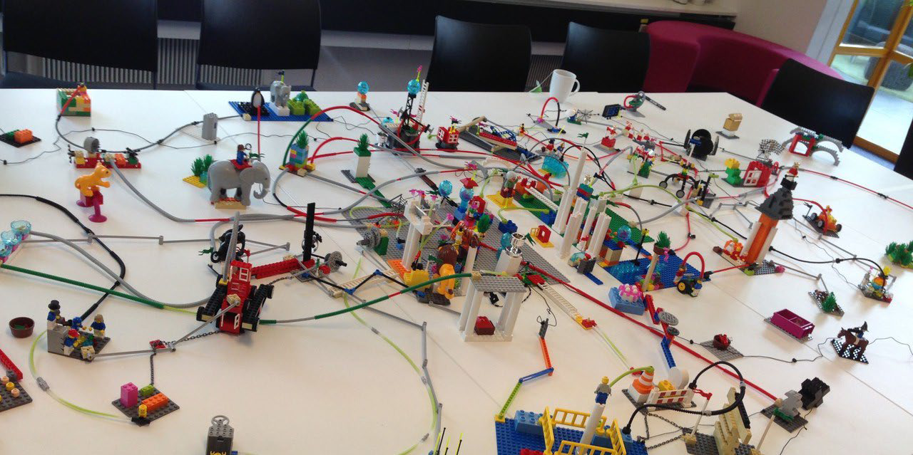
Kèm mã QR dẫn tới Padlet.
4. (Homework) Real Time Identity for YOU
4. (Bài tập về nhà) Bản sắc thời gian thực của BẠN
REAL TIME IDENTITY For YOU
Be part of a team, while you stick to who you are.
Even with the worst frustrations and chaos, there are opportunities.
BẢN SẮC THỜI GIAN THỰC dành cho BẠN
Là một phần của đội ngũ, mà vẫn giữ đúng con người mình.
Ngay cả giữa những bức bối và hỗn loạn tồi tệ nhất, vẫn có cơ hội.
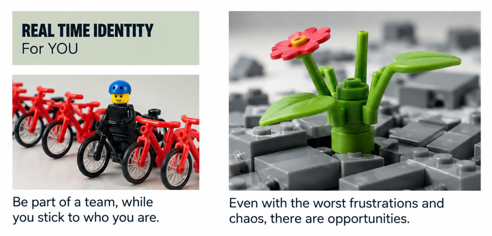
OBJECTIVES OF THE RTI FOR YOU PROCESS
MỤC TIÊU CỦA QUY TRÌNH RTI DÀNH CHO BẠN
- Discover who you really are deep inside and get a clear picture on how you operate in work/life.
- Learn a better way of communicating.
- Pick up skills that make you an even more effective partner in your business while being in accordance with who you are deep inside.
- Become better at adapting and responding to changes.
RTI can be used as a flexible consultant tool for individual and team processes in relation to changes, learning, communication, optimization, transformation and cohesion.
GROW · LEARN · ADAPT · BE YOU
- Khám phá con người thật sâu bên trong bạn và có bức tranh rõ ràng về cách bạn vận hành trong công việc/cuộc sống.
- Học một cách giao tiếp tốt hơn.
- Trang bị những kỹ năng giúp bạn trở thành đối tác hiệu quả hơn nữa trong công việc, mà vẫn hài hoà với con người thật bên trong.
- Thích ứng tốt hơn và phản ứng tốt hơn với thay đổi.
RTI có thể được dùng như một công cụ tư vấn linh hoạt cho các quá trình của cá nhân và đội ngũ liên quan đến thay đổi, học hỏi, giao tiếp, tối ưu hoá, chuyển đổi và gắn kết.
PHÁT TRIỂN · HỌC HỎI · THÍCH ỨNG · LÀ CHÍNH MÌNH
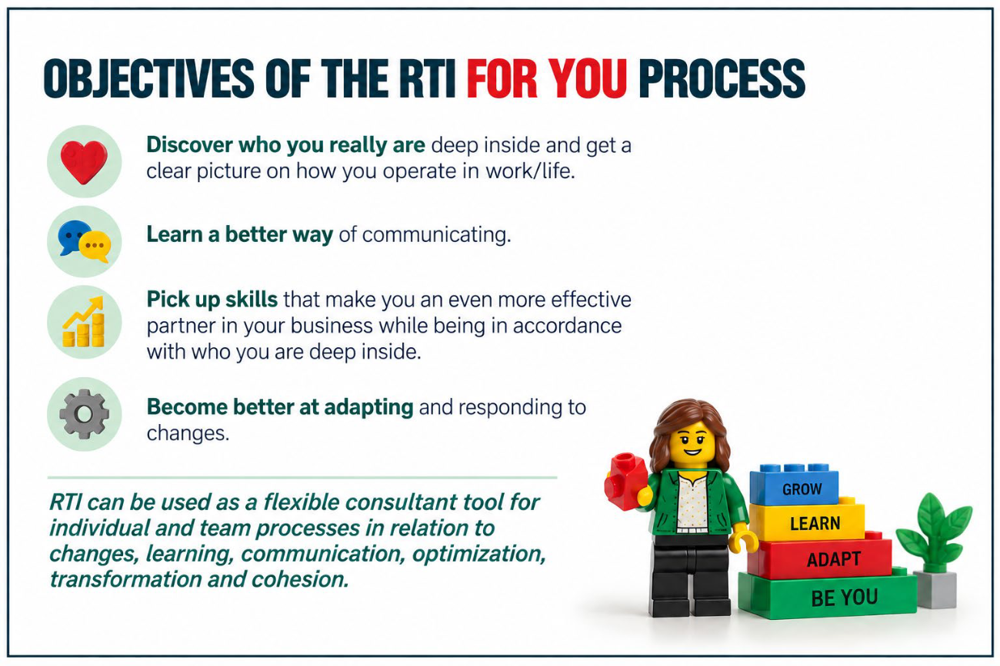
FACILITATOR GUIDANCE — Real Time Identity for You
HƯỚNG DẪN CỦA ĐIỀU PHỐI VIÊN — Bản sắc thời gian thực của bạn
Ba phần được vẽ trên một hình tròn: CI chiếm nửa trái, EI và AI chia đôi nửa phải. Ở slide này, AI là phần bản sắc bạn muốn hướng tới (xem slide 41), không phải trí tuệ nhân tạo.
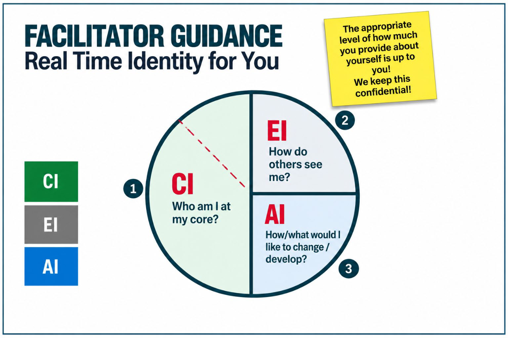
4. (Homework) Real Time Identity for YOU — Final Discussion
4. (Bài tập về nhà) Bản sắc thời gian thực của BẠN — Thảo luận cuối
You have created:
- An important statement and an overview of yourself, that you have shared with others.
- An expression of how you think others see you.
- Your desired identity and you have explored it.
Bạn đã tạo ra:
- Một tuyên bố quan trọng và một bức tranh tổng quan về bản thân mà bạn đã chia sẻ với người khác.
- Một cách thể hiện việc bạn nghĩ người khác nhìn mình ra sao.
- Bản sắc mong muốn của bạn, và bạn đã khám phá nó.
4. (Homework) Real Time Identity for YOU — Action Items?
4. (Bài tập về nhà) Bản sắc thời gian thực của BẠN — Hành động tiếp theo?
- It is now time to leave the world of play and move back to work.
- We hope you will return with new knowledge about yourself as well as better understanding of the people around you.
Exercises:
- Write down 3-4 areas that you want to work with when you return to work.
For example, you can think of new ways to interact with others or consider how you can begin to develop the conditions making your potential or desired identity realized.
- Giờ là lúc rời thế giới của trò chơi để quay về với công việc.
- Chúng tôi hy vọng bạn trở lại với những hiểu biết mới về bản thân, cũng như thấu hiểu hơn những người xung quanh.
Bài tập:
- Viết ra 3–4 lĩnh vực bạn muốn tập trung khi trở lại công việc.
Ví dụ, bạn có thể nghĩ về những cách mới để tương tác với người khác, hoặc cân nhắc cách bắt đầu tạo điều kiện để bản sắc tiềm năng hay bản sắc mong muốn của mình thành hiện thực.
Thank you!
Cảm ơn!
Name: Dr. Thao Luong
Email address: thao.luong3@rmit.edu.vn
Họ tên: TS. Thao Luong
Email: thao.luong3@rmit.edu.vn